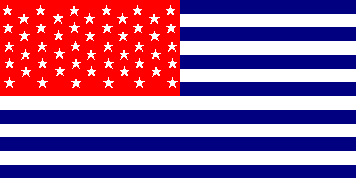
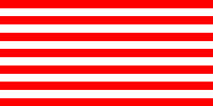
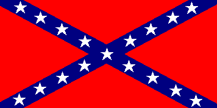
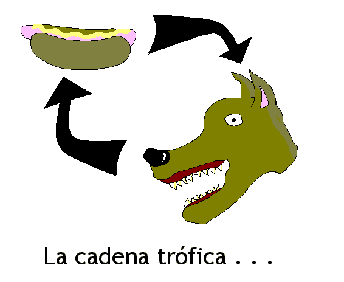

Estupideces Varias
Ritmomaquia
El nuevo logo de una conocida cadena de restaurantes de
anélidos rápidos.
- De itineris mundi
- Homenaje a los difuntos
- 404
- Error de windows I
- Error de windows II
- Error de windows III
- Esta página se actualiza periódicamente (mentira, pero
visitala igual de vez en cuando)...
- Breve diccionario de religión informática.
Apple: es el sistema análogo al islam: sus usuarios creen
que es perfecto y lo siguen hasta el extremo, pese a que es
igual al resto de las religiones.
DOS: es el sistema operativo análogo al judaísmo: es el
predecesor del cristianismo y, como este, es inútil.
Linux: es el sistema operativo análogo al ateísmo: es
el único que sirve pero pocos lo eligen.
Plug & play: el famoso "enchufá y jugá", que, como rara vez
funciona, ha sido reemplazado por el plug & pray, "enchufá y
rezá".
Sistema operativo: moderna religión informática.
Windows: el sistema operativo análogo al cristianismo: no
sirve para nada y sin embargo tiene miles de afiliados.
No intenta ser una ofensa a ninguna de las colectividades
afiliadas a diversas religiones (Windows, Apple, DOS, etc.)
- Emaileanos, (si existe tal verbo) que
te vamos a responder (bah... tal vez no te respondamos)
- Argentina te llama a Caramboland:
- Observad las banderas estadounidenses en tierras paralelas... (mucho Sliders, lo se).
Durante la época de la conquista, España fue más poderosa que Gran Bretaña. Estados Unidos resultó una colonia española...

En las elecciones del 2000, no se pudo definir quien era el
ganador, George Bush o Al Gore... Estados Unidos se separó en South US (demócrata) y North US (republicano)...

La independencia norteamericana no se concretó hasta el siglo XX.
Hasta entonces fue una colonia británica.
Durante la guerra de secesión resultó victoriosa la armada
confederada. La esclavitud no se abolió sino hasta el siglo XX.
Bandera de los Estados Confederados...

"X-MAS-FILES"

{kind=link}
{kind=link}
{kind=link}